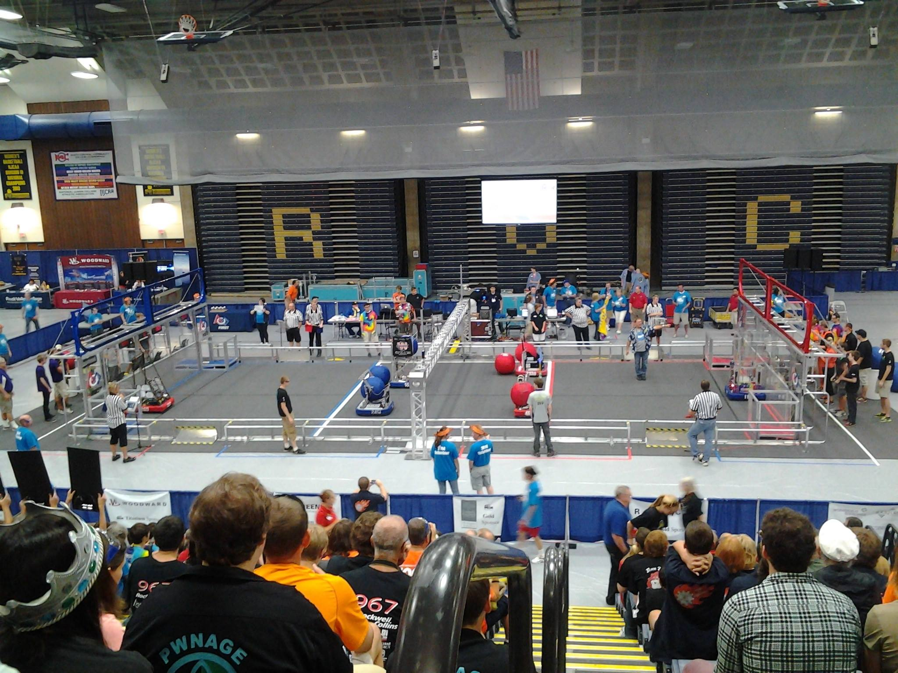

Home
News
About Us
History
Bad Wolf
Calendar
Contact



This is placeholder as heck. Also something something R2OC.
QC Elite is a FIRST Robotics Competition team from the Quad Cities. Since 1998, Team 648 has drawn students from communities in Iowa and Illinois to foster interest in science, technology, engineering, and math.
Each winter, the team constructs a robot to compete in a game designated by the FIRST organization. Managing limitations in budget and time, QC Elite creates robots competing in the Midwest Regional in Chicago, IL, as well as the Central Illinois Regional in Pekin, IL.